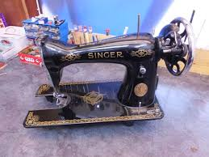

Delicate restoration work that most craftsmen won't attempt.

Tony's technical restoration work began as a childhood passion for understanding how mechanical things work. That curiosity became a rare expertise — the ability to bring intricate vintage machines back to full function with patience and precision.
Clients travel from across Ontario with sewing machines that have sat broken for decades. Tony diagnoses, sources parts when necessary, and restores them to working condition — often better than they left the factory.
Get a Free EstimateEvery service delivered with master-level craftsmanship.
Complete teardown, cleaning, lubrication, and mechanical restoration of antique and vintage sewing machines. From treadle machines to mid-century electrics — Tony brings them back to perfect working order.
Timing adjustments, tension calibration, feed dog servicing, and general tune-up for modern sewing machines. Keep your machine running smoothly with professional servicing — not just a quick clean.
Precise assembly of flat-pack furniture from any manufacturer. Tony ensures everything is square, secure, and properly fastened — no wobble, no stripped screws, no missing steps.
Joint re-gluing, frame reinforcement, veneer repair, and hardware restoration on antique furniture and decorative pieces. Preserving the original character while restoring structural integrity.
"Tony's attention to detail is unmatched. He restored our vintage sewing machine that had been in the family for three generations. It runs like it's brand new."
Technical restoration is assessed on a per-machine or per-piece basis. Contact Tony to describe what you have and get a free diagnostic estimate. Prices updated as of January 2026.
Describe what you have. If Tony can fix it, he will — and he'll be honest if he can't.
Get a Free Estimate